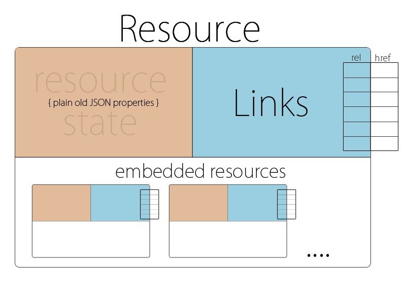
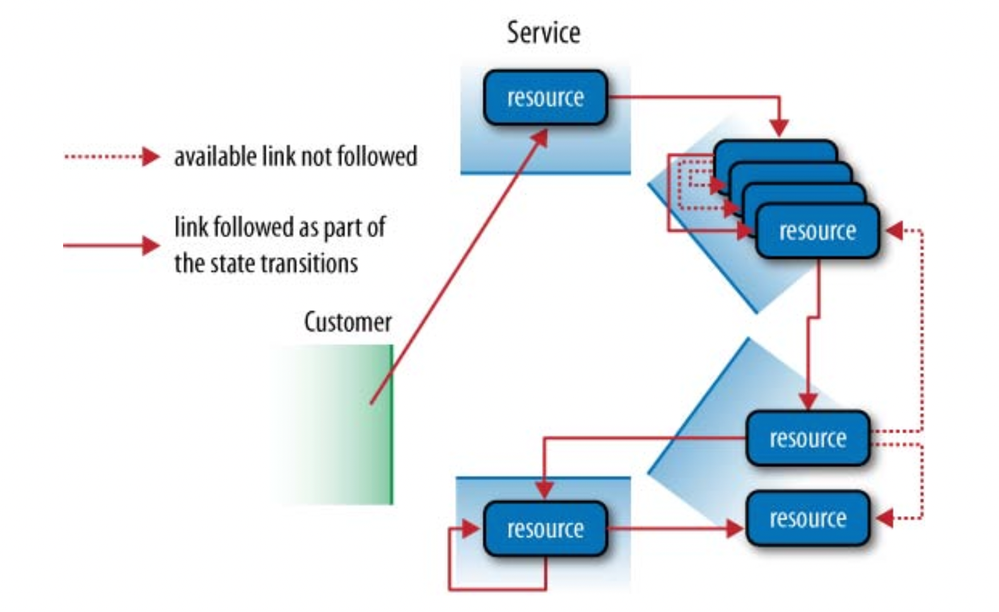
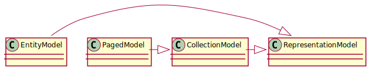

### Stable Contracts "All services, without exception, must be designed from the ground up to be externalizable. That is to say, the team must plan and design to be able to expose the interface to developers in the outside world. No exceptions. Anyone who doesn’t do this will be fired." - [Jeff Bezos, Api mandate, 2002](https://nordicapis.com/the-bezos-api-mandate-amazons-manifesto-for-externalization/) // Name: Jukka Nikki, Identity: Programmer, Since: 6502 // TODO: Codeneering - reaching higher level of abstraction
## Theory & terminology
#### [Design by contract (DbC), 1986, Bertram Meyer](https://en.wikipedia.org/wiki/Design_by_contract) <img alt="contracts" src="images/Design_by_contract.svg.png" width="30%"> "formal, precise and verifiable interface specifications for software components, which extend the ordinary definition of abstract data types with preconditions, postconditions and invariants."
#### [The OpenAPI Initiative (OAI)](https://www.openapis.org/) "As an open governance structure under the [Linux Foundation](https://www.linuxfoundation.org/), the OAI is focused on creating, evolving and promoting a vendor neutral description format. The OpenAPI Specification was originally based on the [Swagger](https://swagger.io/) Specification, donated by [SmartBear Software](https://smartbear.com/)." - [OAI](https://www.openapis.org/)
#### Approaches to api development <img alt="api continuum" src="images/api_continuum.png" width="60%"> "An application programming interface (API) is a connection between computers or between computer programs. (..) A document or standard that describes how to build or use such a connection or interface is called an API specification." - [Wikipedia](https://en.wikipedia.org/wiki/API)
#### Rest Api Maturity model Level three of [Richardson’s model](https://restfulapi.net/richardson-maturity-model/) encourages easy discoverability. This level makes responses self-descriptive by using [HATEOAS](https://en.wikipedia.org/wiki/HATEOAS).
#### Hypertext Application Language  "[HAL](https://stateless.group/hal_specification.html) has two simple concepts. Resources with Links, Embedded Resources and State. Links with target, relation aka. 'rel' and few optional properties"
#### Hypermedia as the engine of application state  "The client transitions through application states by selecting from the links within a representation or by manipulating the representation in other ways afforded by its media type."
## Where to start Code? .. Spec? every software architecture is cute at the start
#### "Code" or Implementation First <img alt="code 1st" src="images/code-first.png" width="40%"> "The Code First approach affords speed, automation and reduced process complexity, at the cost of good developer experience. If the API will only be consumed by the team or company that’s building it, then the Code First approach is an ideal solution." - [Swagger.io](https://swagger.io/blog/api-design/design-first-or-code-first-api-development/)
#### Variant: Api Framework "API Framework method mixes the API implementation with its description Example: [HAL](https://stateless.group/hal_specification.html)+JSON makes [Spring HATEOAS](https://spring.io/projects/spring-hateoas) more closely align to an API description document. (..) generate an API description that conforms to OpenAPI using the [Springdoc](https://springdoc.org/) project." - [Kevin Sookocheff](https://sookocheff.com/post/api/the-false-dichotomoy-of-design-first-and-code-first-api-development/)
#### "Design" or Api First "Once you have a complete description of how a REST API works, much of the way engineers work with APIs can be streamlined. For example: Generate accurate documentation, Create stub code for API development, Build mock servers to prototype the interface, Test that API requests and responses match the intended contract" - [Stoplight.io](https://stoplight.io/openapi/)
#### Variant: Coded API Description (DSL) "Coded API Description involves leveraging a programming language to create your API description. Example: With [Spot](https://github.com/airtasker/spot) TypeScript classes define the API and interfaces are used to represent the request and response bodies. Annotations specific to [Spot](https://github.com/airtasker/spot) are used to fill out the rest of the API description. (..) you can use [Spot](https://github.com/airtasker/spot) to generate your OpenAPI description document" - [Kevin Sookocheff](https://sookocheff.com/post/api/the-false-dichotomoy-of-design-first-and-code-first-api-development/)
## Case study Sping Boot + Spring Hateoas + Spring Data MongoDb + springdoc [Test project](https://github.com/nikkijuk/pigeongram/) contains [handwritten Open Api docs](https://github.com/nikkijuk/pigeongram/blob/main/specs/api.yaml) and open api docs generation from code
#### Spring Hateoas 1.0 Release (0.1 2012, [1.0 2019](https://spring.io/blog/2019/03/05/spring-hateoas-1-0-m1-released)) 
#### Spring Hateoas [entities and collections](https://docs.spring.io/spring-hateoas/docs/current/reference/html/#fundamentals.entity-model)
#### Models and data mapping Domain class has [import alias](https://kotlinlang.org/docs/packages.html#imports) to reduce name clashes Immutable [data class](https://kotlinlang.org/docs/data-classes.html) with 4 attributes [Extension functions](https://kotlinlang.org/docs/extensions.html#extension-functions) for api <-> domain mapping
#### [Hal Representation from DTO](https://docs.spring.io/spring-hateoas/docs/1.2.11/api/org/springframework/hateoas/server/RepresentationModelAssembler.html) Domain and Api classes have [import aliases](https://kotlinlang.org/docs/packages.html#imports) toModel (..) uses [Sping-hateoas](https://spring.io/projects/spring-hateoas) classes to create [hal](https://stateless.group/hal_specification.html) representations
#### Controller: create use domain services assemble [entity model](https://docs.spring.io/spring-hateoas/docs/current/api/org/springframework/hateoas/EntityModel.html) from api model return [entity model](https://docs.spring.io/spring-hateoas/docs/current/api/org/springframework/hateoas/EntityModel.html) within response
#### Controller: get one, get all for one item return [entity model](https://docs.spring.io/spring-hateoas/docs/current/api/org/springframework/hateoas/EntityModel.html) for multiple items return [collection model](https://docs.spring.io/spring-hateoas/docs/current/api/org/springframework/hateoas/CollectionModel.html)
#### Get 2nd signature curl -v localhost:8080/signatures/1 | json_pp
#### Reverse engineering / Documenting <img alt="generation" src="images/org-sringdoc-openapi-gradle-plugin.png" width="50%"> implementation("org.springdoc:springdoc-openapi-ui:1.5.12") implementation("org.springdoc:springdoc-openapi-webmvc-core:1.5.12") implementation("org.springdoc:springdoc-openapi-kotlin:1.5.12") implementation("org.springdoc:springdoc-openapi-javadoc:1.5.12") openApi { outputDir.set(file("$buildDir/docs")) outputFileName.set("api.json") } Use [Gradle plugin](https://github.com/springdoc/springdoc-openapi-gradle-plugin) with [Springdoc](https://springdoc.org/) dependencies
#### Live documentation Inspect with [Swagger ui](https://swagger.io/tools/swagger-ui/) or as raw data. - /swagger-ui.html - /v3/api-docs (json) - /v3/api-docs.yaml (yaml download)
#### Json in Firefox Post **/signatures** return type missed by [SpringDoc](https://springdoc.org/) Created OpenApi document does not match implementation
#### Swagger-ui view
#### Forward engineering / Generation <img alt="generation" src="images/org-openapi-generator.png" width="50%"> openApiGenerate { generatorName.set("kotlin-spring") inputSpec.set("$rootDir/api.yaml") outputDir.set("$buildDir/generated") modelPackage.set("com.test.model") apiPackage.set("com.test.api") configOptions.set(.. Use [Gradle plugin](https://plugins.gradle.org/plugin/org.openapi.generator) with ["kotlin-spring"](https://openapi-generator.tech/docs/generators/kotlin-spring/) generator
#### Editing open api at idea as yaml Checks format, highlights keywords, but still only text.
#### Visual editors might fit to some users Try standalone and web based editors [Apicurio](https://www.apicur.io/), [Stoplight Studio](https://stoplight.io/studio/), [Swagger editor](https://editor.swagger.io/), [SwaggerHub](https://swagger.io/tools/swaggerhub/) Tested Stoplight studio, swagger editor and swagger hub. Still prefer IDEA.
#### Linting using Zalando Rules Start [Zally](https://github.com/zalando/zally) server, see [api docs](https://github.com/zalando/zally/blob/master/server/zally-server/src/main/resources/api/zally-api.yaml), lint, fix, .. POST localhost:8000/api-violations { "api_definition_url": ["../api.yaml"]("https://raw.githubusercontent.com/nikkijuk/pigeongram/main/specs/api.yaml")}
#### Templating with [openapi-generator.tech](https://openapi-generator.tech/) "For maybe 90% of use cases (..) modify the mustache template files to create your own custom generated code." - [Open api generator](https://openapi-generator.tech/docs/templating/) "[kotlin-swagger-spring-functional](https://github.com/cdimascio/kotlin-openapi-spring-functional-template) (..) for Kotlin Spring WebFlux (..) provides 12-factor compliant environment based config and integrated in linting."
#### [Generation Gap Pattern](https://en.wikipedia.org/wiki/Generation_gap_(pattern)) "Modifications should not be made to generated code, as they would be overwritten if the code generation process was ever re-run" - John Vlissides With open api - Encapsulate generated code within web adapter - Generate api data structures and annotated interfaces for controllers - Make sure generated code matches with your other code (datatypes, naming, ..) - Define clear boundaries - Don't generate too much!
## Use cases, ideas, tools, ..
#### Mock before you Rock <img alt="live mocs" src="images/prism-open-api-mocking.png" width="50%"> Use [Stoplights](https://stoplight.io/) [Prism](https://stoplight.io/open-source/prism/) to mimic your API’s behavior as if you already built it.
#### Live contract testing with [Prism](https://stoplight.io/open-source/prism/) "Unlike mocking, the [validation proxy](https://meta.stoplight.io/docs/prism/ZG9jOjk3-validation-proxy) expects there to be a real API running somewhere. The proxy feature will help you identify discrepancies between the OpenAPI document and any other server you designate as the target. This can help frontend developers integrating with your API The proxy can also be enabled in staging or any other pre-production environment."
#### Collaborate, share, enforce rules Use [SwaggerHub](https://swagger.io/tools/swaggerhub/) as your single source of truth for API definitions
#### Testing <img alt="live edit" src="images/readyapi-open-api-testing.png" width="70%"> Use [readyApi](https://smartbear.com/product/ready-api/) to accelerate functional, security, and load testing of RESTful, SOAP, GraphQL and other web services right inside your CI/CD pipeline
## Thoughts
"Programmers know the benefits of everything and the tradeoffs of nothing" - Rich Hickey Speed vs. Purity? Agility vs. Process? Developer vs. ..? What we trade against each other? Who's in charge?
#### [Not for cowboy coders..](https://en.wikipedia.org/wiki/Cowboy_coding) "API First obviously is in conflict with the bad practice of publishing API definition and asking for peer review after the service integration or even the service productive operation has started." - [Zalando](https://opensource.zalando.com/restful-api-guidelines/#api-first)
#### Events and asynchronous messaging <img alt="events" src="images/zalando-events-api-guidelines.png" width="70%"> Define [Events](https://opensource.zalando.com/restful-api-guidelines/#events) using clear conventions. "What distinguishes events from other kinds of data is the delivery style used, asynchronous publish-subscribe messaging. But there is no reason why they could not be made available using a REST API" - [Zalando](https://opensource.zalando.com/restful-api-guidelines/#events)
"However, we do not forbid HATEOAS; you could use it, if you checked its limitations and still see clear value for your usage scenario that justifies its additional complexity." - [Zalando](https://opensource.zalando.com/restful-api-guidelines/#163) "(..) in today’s industry full HATEOAS compliant APIs are a very rare exception." - [Zalando](https://opensource.zalando.com/restful-api-guidelines/#_footnotedef_1)
## End
#### [Is High Quality Software Worth the Cost?](https://martinfowler.com/articles/is-quality-worth-cost.html) <img alt="quality & cost" src="images/quality_tradeoff_pseudo_graph.png" width="40%"> "(..) there is a period where the low internal quality is more productive than the high track. During this time there is some kind of trade-off between quality and cost. The question, of course, is: how long is that period before the lines cross?" - Martin fowler